PROMPT GÉNÉRIQUE
A
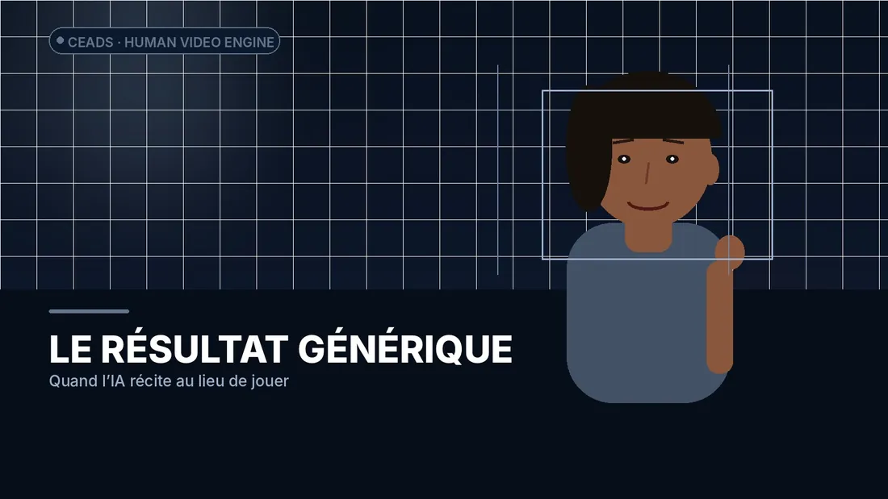
Vidéo A · résultat génériquePersonnage propre visuellement, mais regard figé, gestuelle artificielle et discours interchangeable.
Apprenez à transformer votre produit ou service en vidéos IA naturelles, crédibles et pensées pour votre cible — de la stratégie marketing au montage final.
Prends quelques minutes pour regarder cette vidéo jusqu’au bout : tout y est expliqué.
Paiement unique · Accès immédiat · Coaching inclus · Groupe WhatsApp
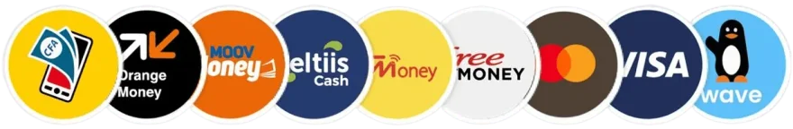
Même objectif, même technologie — mais deux niveaux de direction complètement différents.

Vidéo A · résultat génériquePersonnage propre visuellement, mais regard figé, gestuelle artificielle et discours interchangeable.
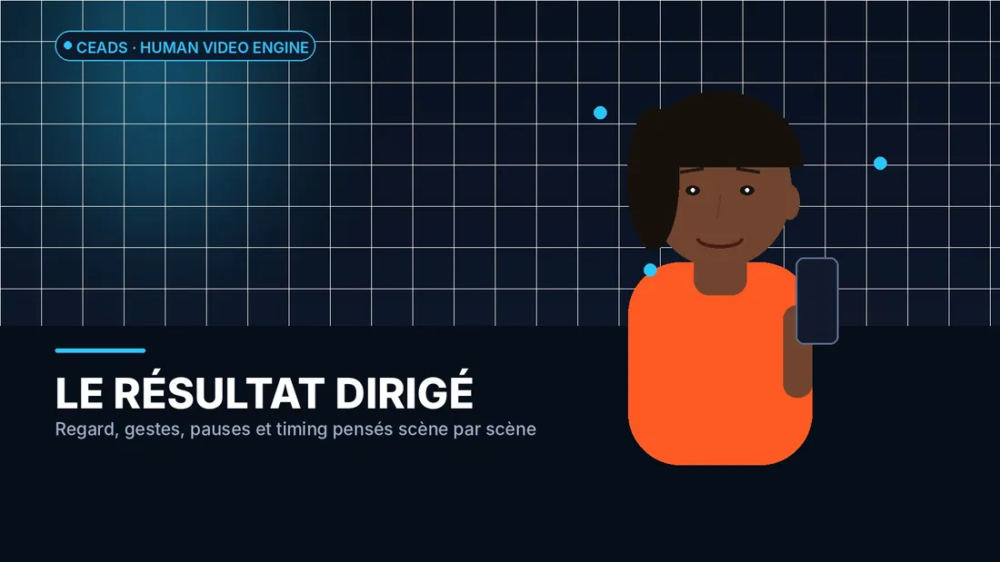
Vidéo B · résultat dirigéComportement, pauses, cadrage, personnage et message dirigés scène par scène.
Le problème n’est pas seulement ton outil. Le problème est l’absence de direction.
La voix peut être correcte, mais aucune présence humaine ne se dégage.
Les phrases sont propres, mais personne ne parle réellement comme ça.
Tellement parfaite qu’elle déclenche immédiatement l’effet IA.
Personnage, lumière, vêtements ou environnement changent sans raison.
Elle pourrait vendre n’importe quel produit à n’importe qui.
Chaque nouvelle vidéo redevient un problème à résoudre depuis zéro.
Et elle devient pertinente commercialement lorsque cette scène dit la bonne chose à la bonne cible.
La stratégie vient avant la génération. La direction vient avant le rendu.
Comprendre marché, cible, problème, désir, objections, angle et message pour que la vidéo parle réellement à l’acheteur.
Choisir le bon personnage pour porter le message, inspirer confiance et conserver une cohérence visuelle scène après scène.
Diriger regard, gestes, pauses, posture, respiration, caméra et continuité pour casser l’effet robotique.
Transformer cette direction en scènes, puis en vidéo complète, propre, rythmée et prête à être publiée.
Le même workflow, mais illustré plus clairement pour aider à comprendre et à implémenter chaque étape.
Tu fournis l’essentiel sur ton offre, ton contexte et ce que tu veux vendre.
Recherche, Buyer Avatar, angles, hooks, messages et scripts adaptés à la cible.
Casting visuel et recherche du personnage de référence à transformer ensuite.
ChatGPT transforme le script en plans précis, gestes, pauses et intentions.
Génération des scènes UGC, personnages parlants, actions ou B-rolls.
Flow pour les personnages parlants ou ElevenLabs pour une narration continue.
Assemblage, rythme, sous-titres, sound design et finition commerciale.
On garde la même structure, mais chaque format peut maintenant embarquer sa propre vidéo de démonstration.
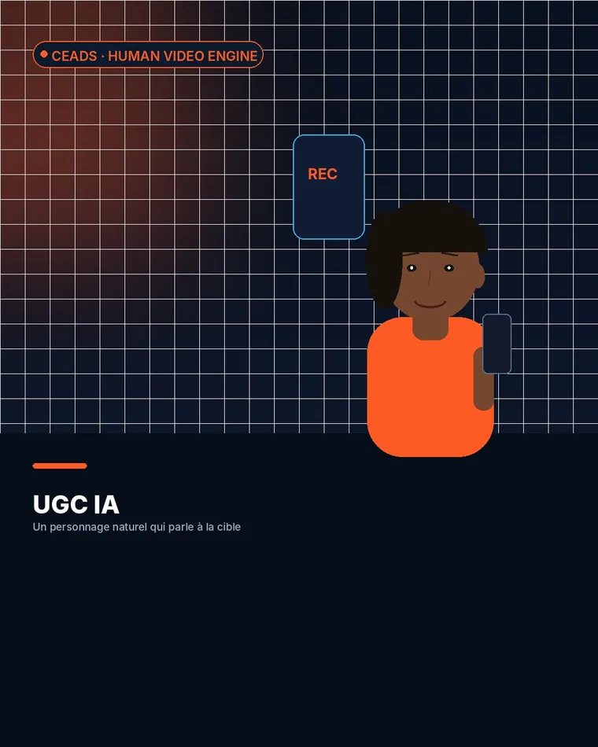
UGCPersonnage parlant à la caméra, comportement naturel et proximité immédiate avec la cible.
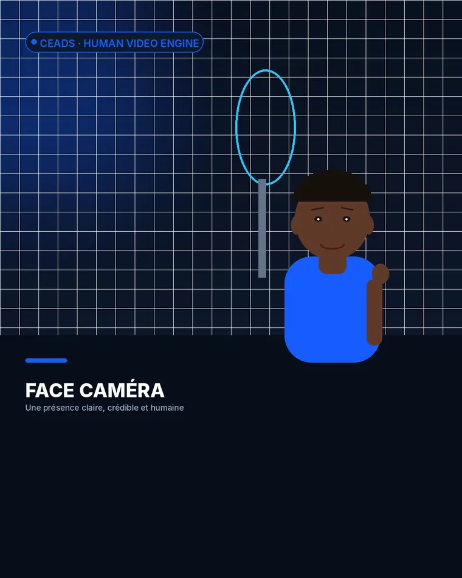
FACEConseil, démonstration ou message de vente porté directement par un personnage crédible.
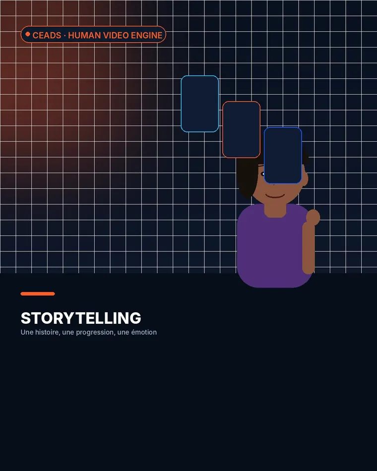
STORYNarration structurée avec progression visuelle et montée d’attention jusqu’au message clé.
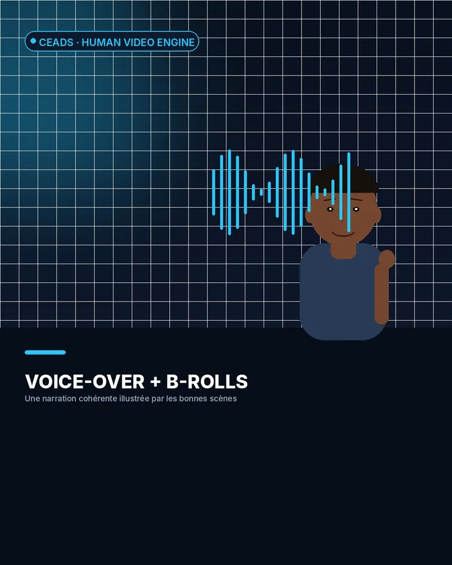
VOUne voix unique, des scènes qui illustrent le récit sans mélanger les registres vocaux.
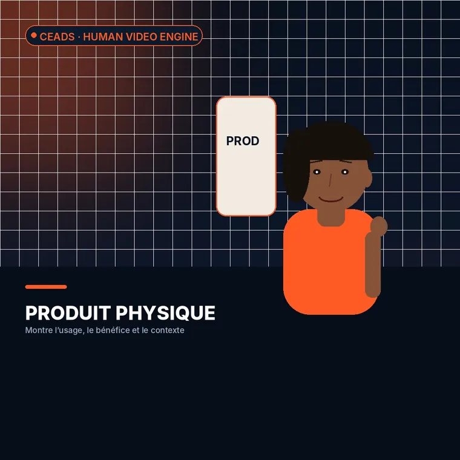
PRODUsage, bénéfices, démonstration et mise en situation réaliste du produit.
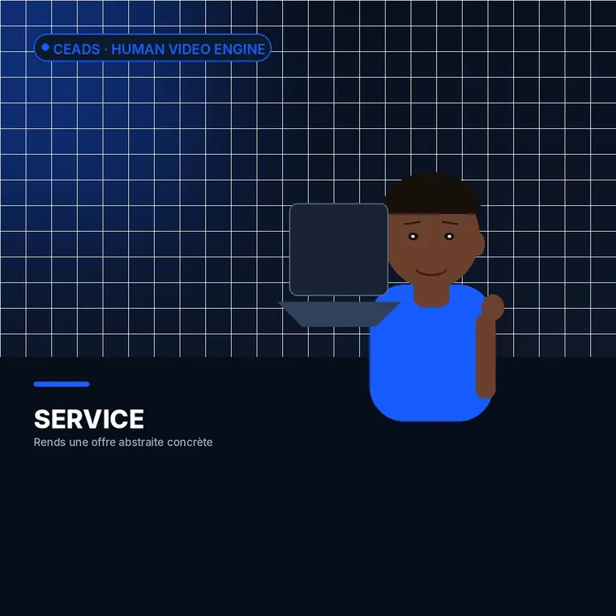
SERVICERendre une offre abstraite concrète, compréhensible et plus facile à désirer.
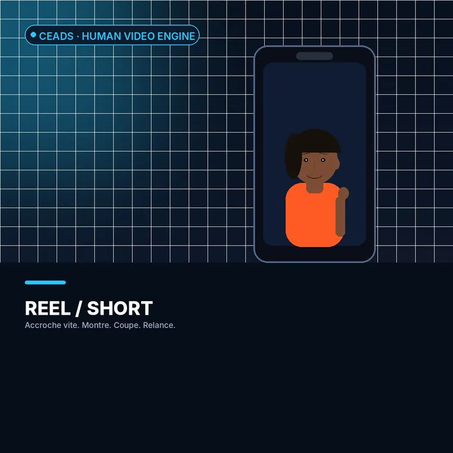
REELContenu court, rythmé et optimisé pour l’attention sur les plateformes sociales.
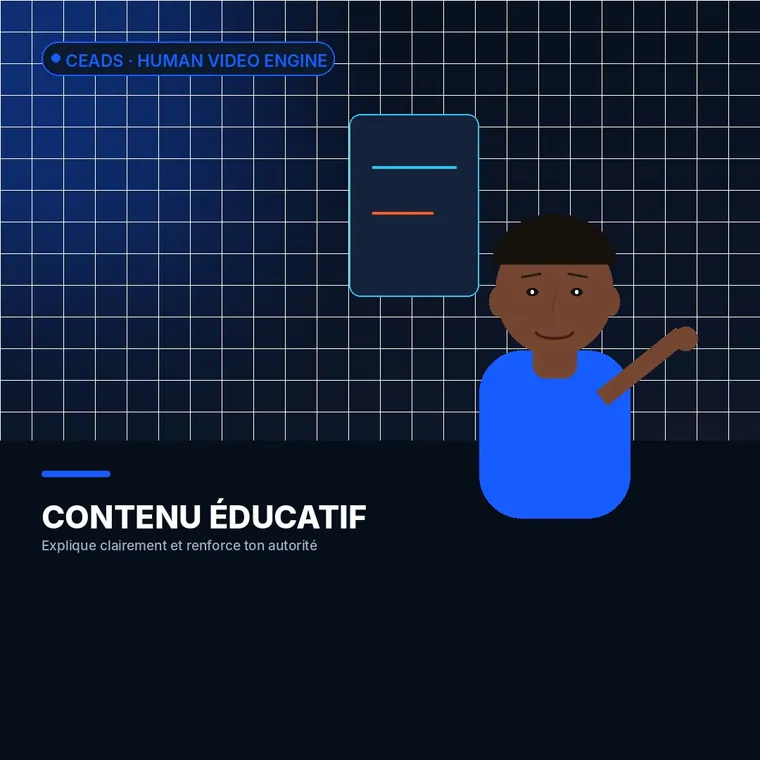
EDUExplication, illustration et crédibilité pour du contenu monétisable ou autoritaire.
Il se trouve dans la manière dont chaque seconde du personnage est dirigée.
Micro-déviations, retour caméra et attention dirigée.
Mouvements justifiés par ce que le personnage raconte.
Respiration, réflexion et micro-hésitations naturelles.
Texture, pores, asymétries et petites imperfections.
Poids du corps, micro-ajustements et position crédible.
Décors cohérents, suffisamment imparfaits pour paraître vrais.
Cadrage intentionnel, pas systématiquement clinique.
Typiquement 17–24 mots pour ~8 secondes lorsque pertinent.
Tu avances étape par étape : stratégie, personnage, direction humaine, génération et montage. Chaque module t’aide à produire pendant que tu apprends.
Comprendre le marché, la cible, les angles, les hooks et les scripts.
Choisir le bon personnage via Pinterest et structurer sa cohérence visuelle.
Appliquer Human Realism, Scene Map et direction humaine scène par scène.
Générer, monter, corriger et finaliser une vidéo propre et publiable.
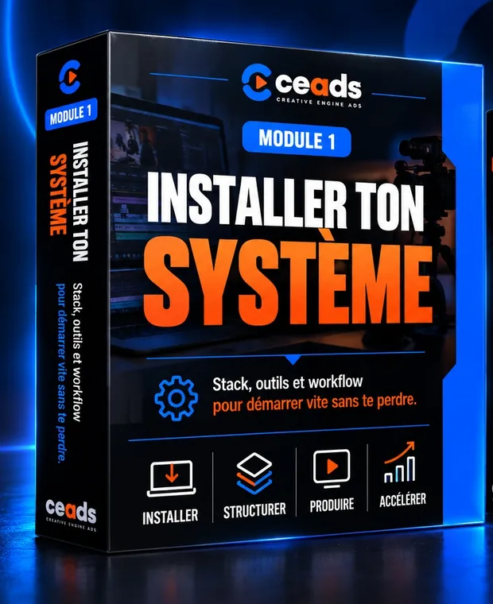
Tu mets en place une stack claire, un dossier de travail organisé et un workflow précis pour savoir quoi faire, dans quel ordre et avec quel outil. Résultat : tu démarres plus vite et tu évites de te perdre dans la technique.
Tu utilises ChatGPT pour comprendre le marché, la cible, ses problèmes, ses désirs et ses objections afin de construire chaque vidéo sur des informations réellement utiles. Ton message devient plus pertinent et parle davantage à la personne capable d’acheter.
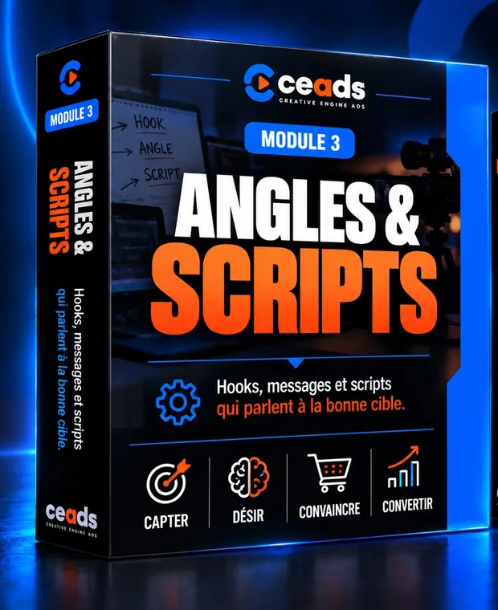
Tu transformes les insights marketing en angles, accroches et scripts qui sonnent naturels au lieu de ressembler à un texte générique. Tu gagnes en clarté, en vitesse et en capacité à capter l’attention dès les premières secondes.
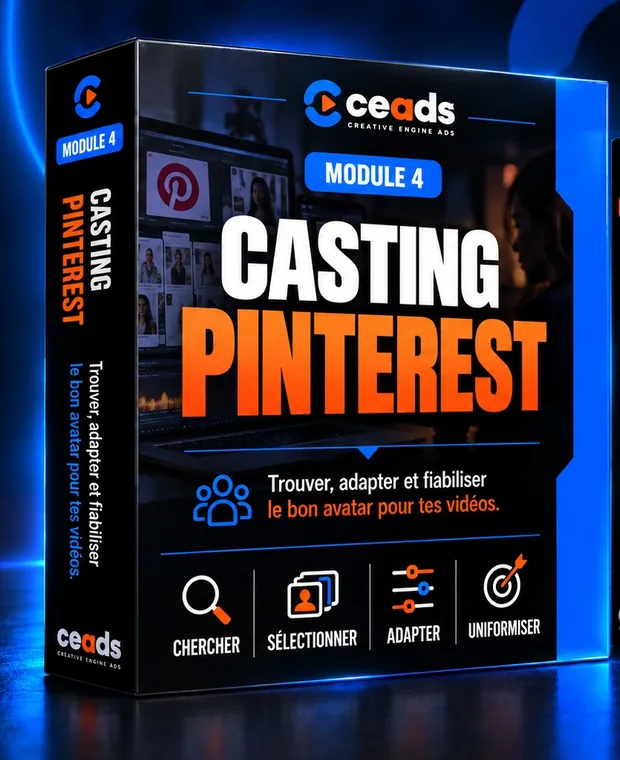
Tu apprends à rechercher et sélectionner une référence visuelle cohérente avec la cible, puis à construire un personnage distinct et crédible. Tes vidéos gagnent en cohérence et le personnage choisi inspire davantage confiance.
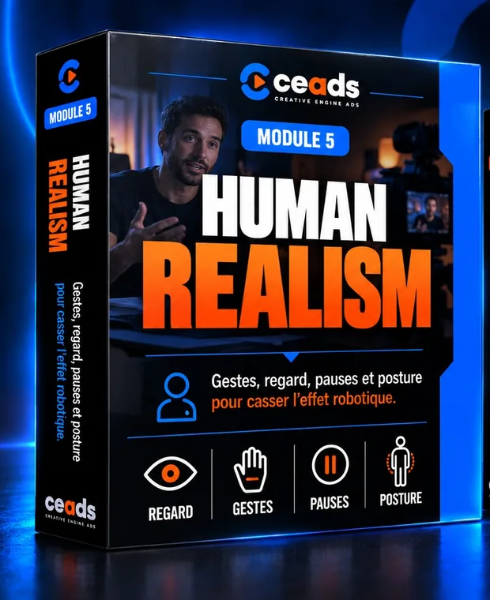
Tu diriges le regard, la peau, les gestes, la posture, les respirations, les pauses et les micro-imperfections qui rendent un personnage plus humain. Le rendu paraît moins robotique et beaucoup plus crédible à l’écran.
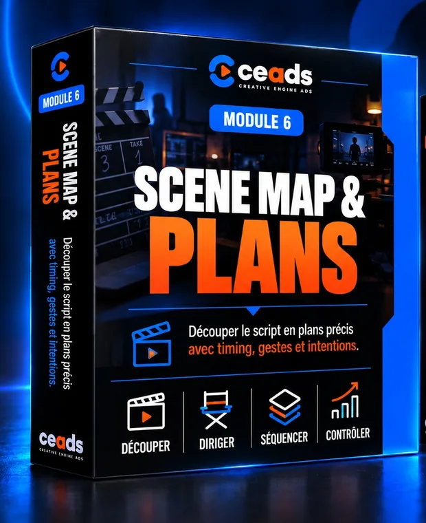
Tu découpes ton script en scènes précises avec timing, cadrage, actions, gestes et intentions. Tu génères avec davantage de contrôle, réduis les essais inutiles et obtiens des scènes plus naturelles dès les premières générations.
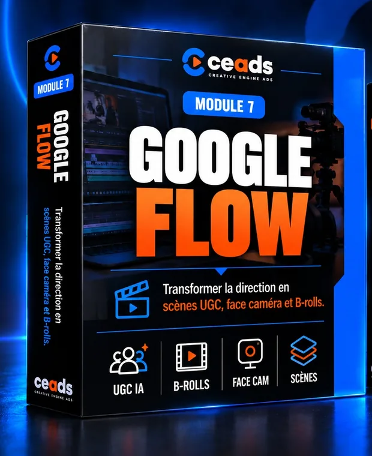
Tu apprends à produire des scènes UGC, face caméra, personnages parlants, actions et B-rolls dans Google Flow en fonction du format recherché. Tu passes plus rapidement de ton script à une séquence réellement exploitable.
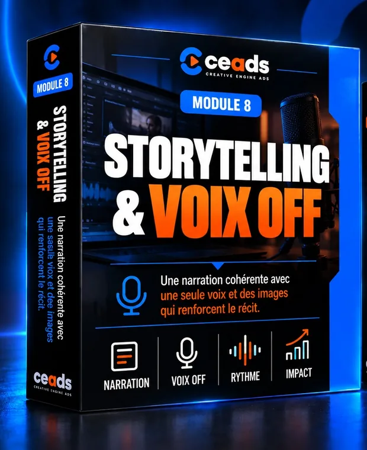
Tu structures une narration cohérente avec une seule voix, puis tu l’illustres avec des B-rolls et des scènes qui renforcent le récit. Tes vidéos deviennent plus fluides, plus professionnelles et plus faciles à suivre.
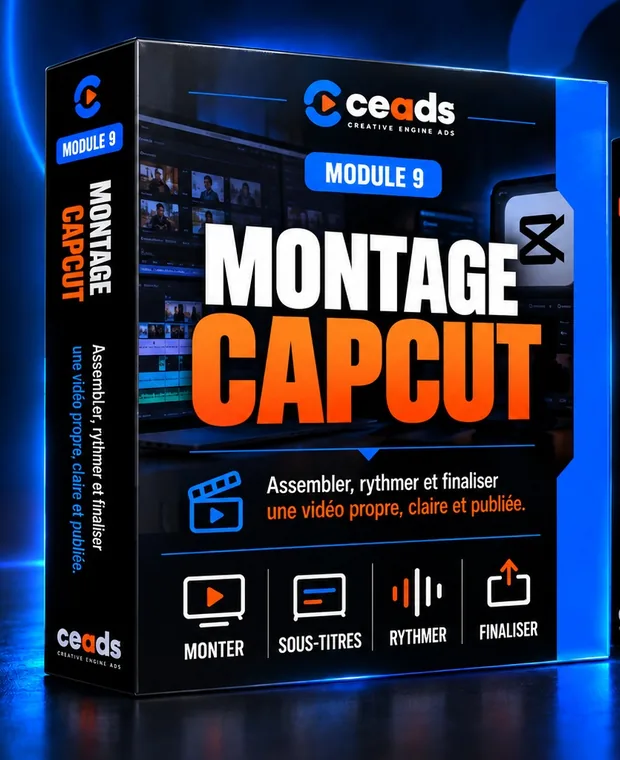
Tu assembles les scènes, ajustes le rythme, les sous-titres, les transitions et le sound design pour transformer des générations séparées en une vraie vidéo cohérente. Le résultat final devient plus propre, plus engageant et prêt à publier.
Des prompts prêts à adapter, de l’accompagnement, un groupe privé et des mises à jour pour t’aider à avancer plus vite sans rester bloqué.
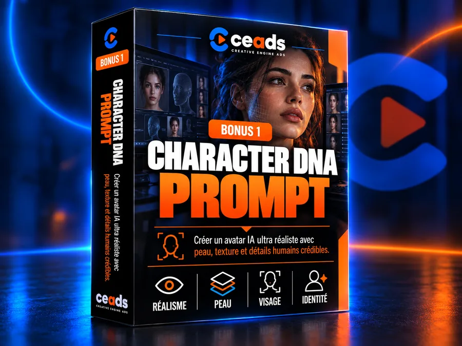
Un prompt complet pour créer un personnage IA avec une peau, des pores, des textures et des détails suffisamment naturels pour être difficile à distinguer d’une vraie personne.
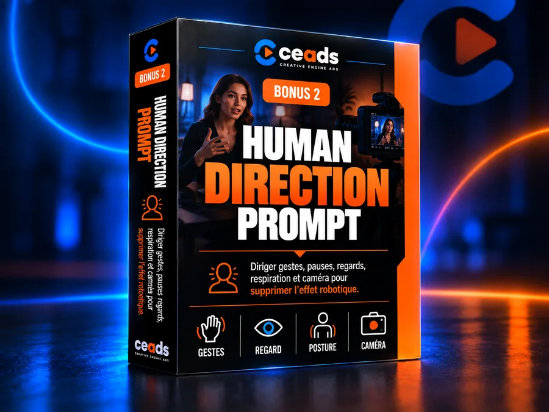
Un prompt conçu pour diriger les gestes, regards, pauses, respirations, postures et mouvements de caméra afin d’éliminer l’effet robotique et rendre le personnage plus humain.
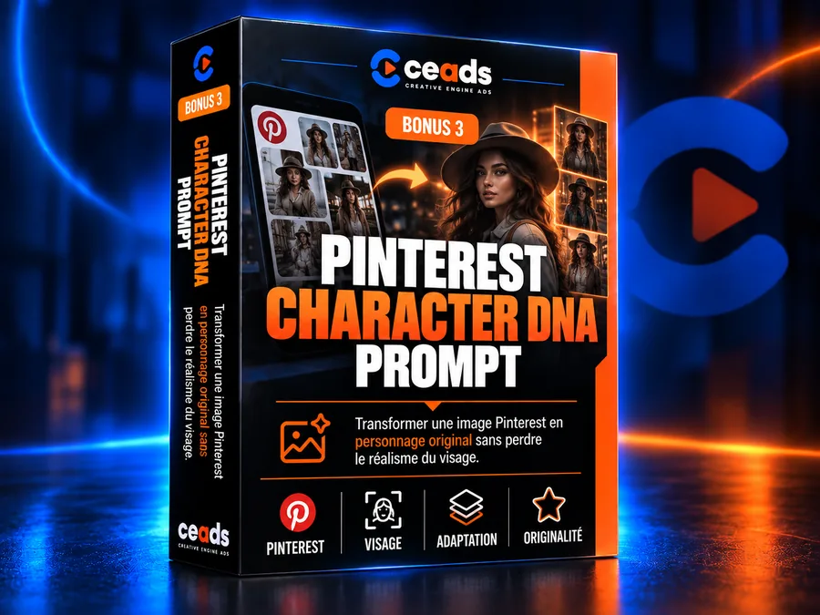
Un prompt pour partir d’une image Pinterest et demander à ChatGPT de modifier le visage et certains traits afin de créer un personnage original tout en gardant un rendu crédible.
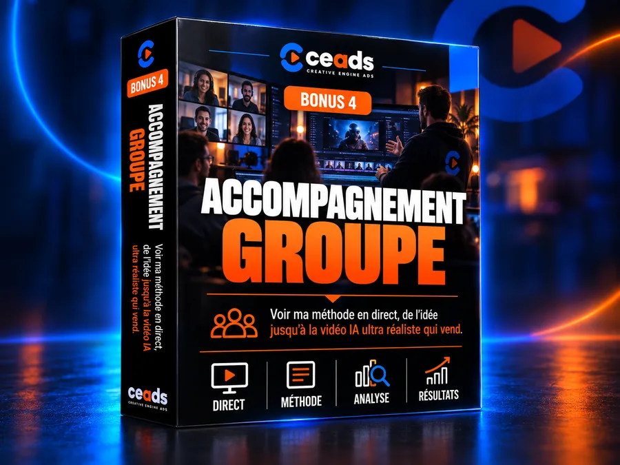
Des sessions de groupe où je te montre en direct comment je réfléchis et construis une vidéo IA ultra-réaliste qui vend, de l’idée au rendu final, pour que tu puisses ensuite reproduire la méthode en autonomie.
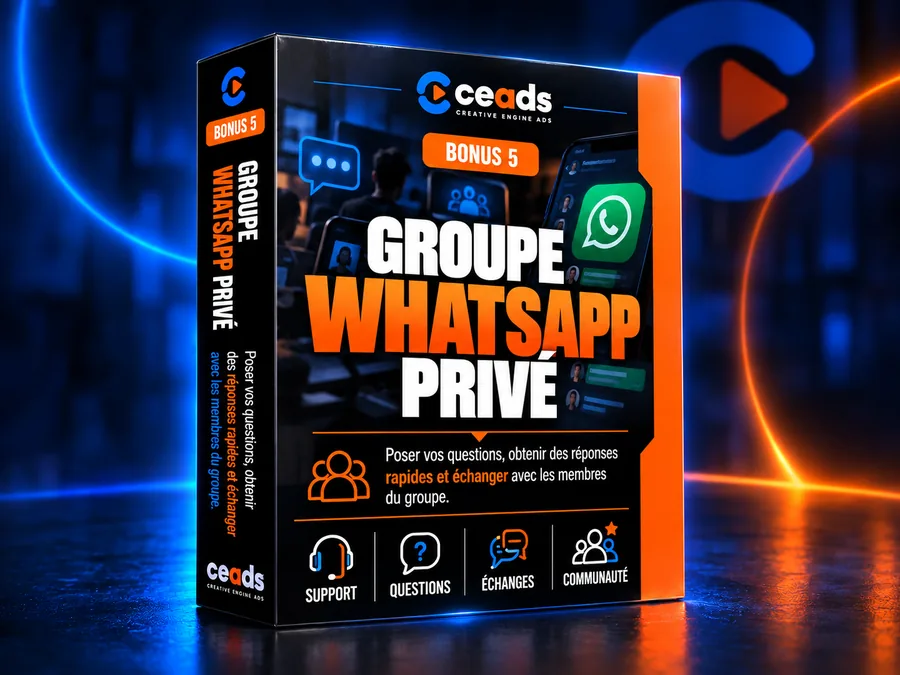
Tu accèdes au groupe WhatsApp privé pour poser tes questions, échanger avec les autres membres et obtenir de l’aide lorsque tu bloques.
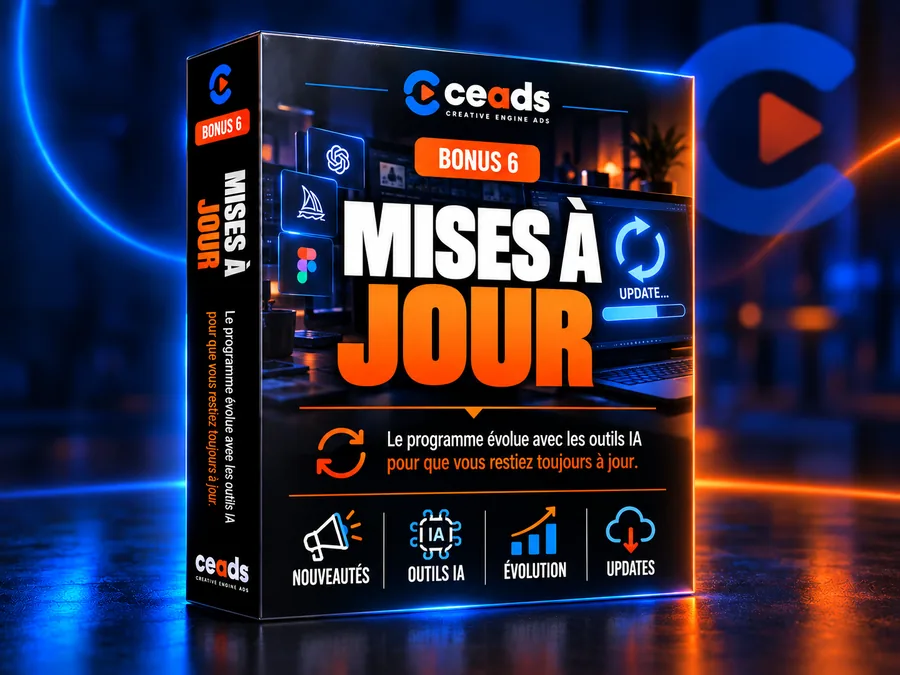
Les outils IA évoluent vite. À chaque évolution importante des outils utilisés dans la formation, le programme est actualisé pour rester aligné avec le workflow enseigné.
Une session Google Meet chaque semaine pendant la cohorte, plus un groupe WhatsApp privé pour poser tes questions, partager tes vidéos et obtenir des corrections.
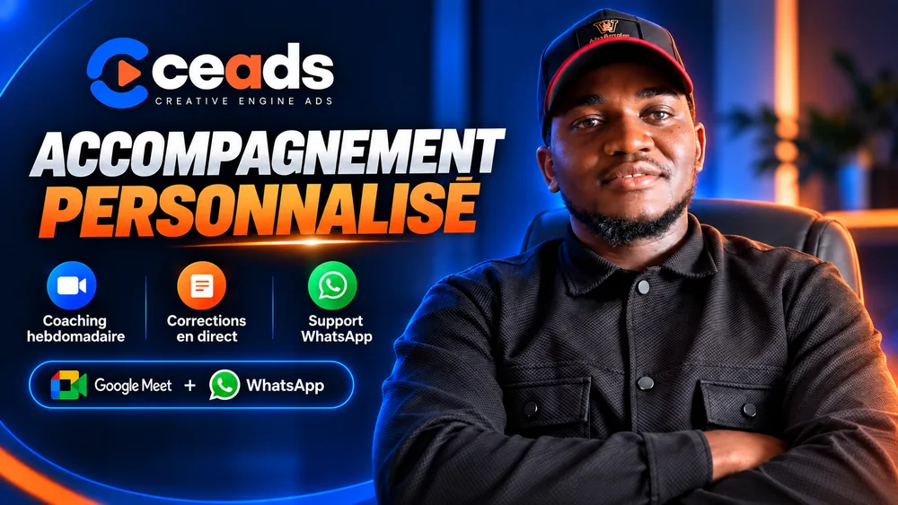
Pas pour collectionner des outils. Pour produire.
Le tarif augmente par paliers à mesure que les inscriptions sont confirmées.
Paiement unique · Accès immédiat
Le lien de paiement se configure dans assets/js/config.js.
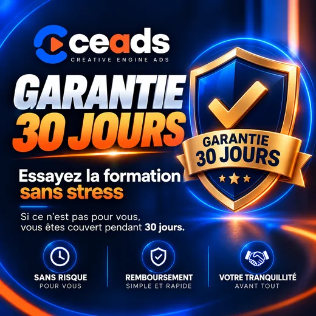
Tu avances dans la formation, tu appliques les étapes, tu produis concrètement et tu gardes une vraie marge de tranquillité pendant les 30 premiers jours.
Oui. Le parcours démarre par la stratégie et les fondamentaux avant de passer aux outils de production.
Les outils principaux fonctionnent principalement dans le cloud. Un ordinateur confortable et une connexion stable améliorent néanmoins l’expérience.
Certains proposent des accès gratuits ou limités ; d’autres nécessitent des crédits ou abonnements. Les coûts évoluent et seront présentés clairement dans la formation.
Le montant dépendra du volume de générations et des offres disponibles au moment où vous suivez la formation. Aucun montant fixe n’est promis sur cette page.
La disponibilité dépend du pays et du compte Google. La formation explique comment vérifier l’accès et adapter le workflow si nécessaire.
Oui. Le système couvre aussi les offres de services, les formations, le coaching, les logiciels et autres offres non physiques.
Non. La méthode inclut la construction de personnages visuels adaptés au rôle et à la cible.
Pour un personnage parlant, la voix peut venir de Flow. Pour un storytelling ou une narration, ElevenLabs peut fournir une voix unique du début à la fin.
La cohorte prévoit des sessions collectives de revue et de correction, complétées par un groupe WhatsApp.
Le programme inclut une méthode de diagnostic et de correction : identifier le défaut, ajuster le prompt ou la scène, puis régénérer uniquement ce qui est nécessaire.
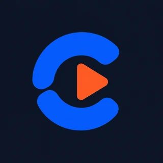
CEADS HUMAN VIDEO ENGINE™Rejoins la cohorte fondatrice et apprends à transformer ton produit ou service en vidéos IA naturelles, crédibles et pensées pour ta cible.
10 000 FCFA Je rejoins la cohorte Le tarif augmente lorsque le palier actuel est rempli.